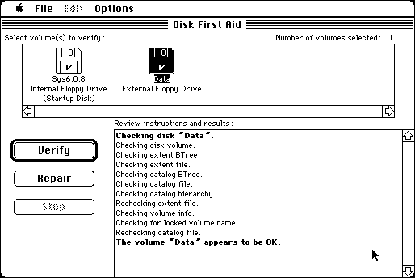

Download (external link)
Disk_First_Aid_7.2.2.sea.bin (57K) Disk First Aid 7.2.2
copyright: Apple Computer, Inc.
mod date: Apr 25, 1995
license: free, but don't redistribute
“Verifies the directory structure of any Hierachial File System (HFS) based storage volume.” Can also do some repairs.

Some version of Safari for Mac OS X have been observed to have trouble downloading this file. This turns out to be a problem with the “Open "safe" files after downloading” option in the Safari General preferences. Turn this option off. Even if it worked, this option should still be turned off, because you want the “.bin” file, rather than extracting the application in OS X.
To use this application, you can import “Disk_First_Aid_7.2.2.sea.bin” into Mini vMac with ImportFl, and then open this “.bin” file with binUnpk, and then run the resulting self extracting archive application.
Here is the md5 checksum for the download, signed with Gryphel Key 5:
--------- GRY SIGNED TEXT --------- e8500f9cfc915382c8967b51052ac3b7 Disk_First_Aid_7.2.2.sea.bin ------- BEGIN GRY SIGNATURE ------- Gry/4Xa8CFcUzxdN/JmjMEAy2/bHl+EX/B6w4vSRwnRyX9+PXLZ+CR4kYYaprL16 Izf/Nle1i/d3ezkFrqk1TQu6og4f3JGB3NWacXL+urZdjJ6nq2Ib6U82+VISWhQq zBmNUmhrOM+rDhJ3j6VLAiigNnrnvsy3zBefBRrREUKClWK74JW+xjFt5h8Ts7sM -------- END GRY SIGNATURE --------